Fear is the business model
Flock and its rival ALPR vendors are private companies that exist to make money. The scarier crime looks, the more cameras they sell, so actually ending crime was never the point. Flock is now valued at $8.4 billion.
Cancel the contract. Take the cameras down.
We're local residents working to get Flock Safety's automated license plate readers out of Cobb County, along with the warrantless, nationwide surveillance they make possible.
Art by Marietta artist @mind_invader_comics
Recent public records releases and national reporting tell the same story. Our personal travel data gets collected without a warrant, then badly mishandled by Flock Safety and the agencies it sells to. The talking points below work for the County, and they work just as well for any city with an active contract.
Flock and its rival ALPR vendors are private companies that exist to make money. The scarier crime looks, the more cameras they sell, so actually ending crime was never the point. Flock is now valued at $8.4 billion.
Leaked materials show Flock building a tool that can "jump from LPR to person." It lets police identify and track specific people anywhere in the country, with no warrant and no court order.
Once the data exists, it can be pulled for immigration enforcement. Cobb PD may have a "strong" policy, but the agencies it shares with might have a weak one, or no policy at all.
Researchers showed Flock cameras can be compromised with simple tools in under a minute. A "side door" gave Customs & Border Patrol secret access to 80,000+ cameras, and portal logins have surfaced on the dark web.
Officers have used ALPR networks to track women who had abortions, to follow former partners, and to stalk people for personal reasons. The accountability "audits" Flock points to are so unwieldy that most agencies never actually use them.
Residents of Norfolk, Virginia are suing over ALPRs as a Fourth Amendment violation, with similar suits in San Jose and Oakland. Mass, suspicionless tracking of ordinary drivers is a costly legal liability.
Each red dot is an automated license plate reader, almost all of them Flock Safety cameras. Type your address below to drop a pin and count how many already sit within a mile of where you live, work, and drive.
Enter an address (or just click the map) to drop a pin and count the ALPR cameras within one mile. Your address isn’t stored. Lookups run through OpenStreetMap.
Camera locations from DeFlock and OpenStreetMap contributors. Open the full national map →
Email us at deflockcobb@proton.me with questions, or to get active with our grassroots, resident led movement.
Add your name and stay in the loop. Questions? Email us at deflockcobb@proton.me and opt in to be listed as a supporter.
Cobb County and several cities still have active Flock contracts. Copy the letter below, personalize it, and send it to the Board of Commissioners or your city council.
A phone call carries real weight. Ask your reps to put an item on the agenda to cancel the Flock contract, then show up and say it out loud at a public meeting.
Share this page with neighbors. The more residents who speak up across Cobb's cities, the harder this is for officials to ignore.
Keep up with actions, meetings, and wins, then share a post with a neighbor.
Copy this, edit it in your own voice, and send it to your commissioners or council members. A personal sentence at the top makes it far more effective.
Dear Commissioners / Council members:
Flock cameras and automated license plate readers were approved by our commissioners or city council and installed in our communities. Since then, they have been used alongside ICE and federal agents to carry out clearly unconstitutional immigration "enforcement." They have been used to track women who had abortions. Officers have even used them to follow former partners and to stalk other people for personal reasons.
Recent audits of our local data confirm what national reporting has shown all year. The information these cameras collect is available not only to police departments across the country, but to ICE. We are turning into a mass surveillance nation. Is that really what we want?
Residents across the political spectrum already feel their data is exposed, both to every level of government and to private companies, some of them based overseas. In Norfolk, Virginia, residents are now suing their city, arguing that installing ALPRs violates the Fourth Amendment's protection against unreasonable searches.
Flock is a private company with one goal: to make money. It is partially funded by Peter Thiel's Founders Fund, which also bankrolls Palantir, a surveillance tool used by ICE and Border Patrol to target migrants. Flock has been caught in national reporting making one false statement after another about its technological controls and security. Researchers have shown Flock cameras can be hacked with simple tools in under a minute. There is no way to secure the data this faulty technology collects, and handing the current federal government more of our private travel data is dangerous and unacceptable.
Your job is to protect the people who live here. That means protecting our constitutional rights, our privacy, and our safety, including our travel data. The only acceptable option is to cancel the contract and remove the cameras. Doing so protects residents' privacy and spares the city a costly civil liberties lawsuit like the ones already underway in San Jose, Oakland, and Norfolk.
We have to stop building mass surveillance infrastructure, especially under a government that leans this far toward authoritarianism. Please cancel the Flock contract right away and take the cameras down. If they cannot come down at once, cover them, and hold public hearings on this urgent question of data security and civil rights.
Yours truly,
[Your name]
Call, email, and if you can, meet them in person. Ask them to put an item on the agenda to cancel the Flock contract and take the cameras down. Regular meetings fall on the 2nd Tuesday at 9 AM and the 4th Tuesday at 7 PM, at the Cobb Administration Building, 100 Cherokee St, Marietta.
Enter your address to find which Cobb Commission district you’re in and who represents you. Your address isn’t stored. Lookups run through OpenStreetMap.
Seven Cobb cities run their own contracts, separate from the county. Click a city to see its councilmembers and, where the council is elected by ward, find out who represents your address. Spot something out of date? Email deflockcobb@proton.me
Acworth's five aldermen are all elected at large, so every one of them represents you no matter where in the city you live. Write to the whole board.
Austell elects four councilmembers by ward plus two at large. Your ward councilmember and both at-large members all represent you.
Enter an Austell address to find your ward. Your address isn’t stored.
Kennesaw's five councilmembers are all elected at large, so every one of them represents you. You can also write the whole council at once at kennesawcouncil@kennesaw-ga.gov.
Mableton elects all six councilmembers by district.
Newly incorporated, with no active Flock contract yet. Let's keep it that way and tell the council we don't want AI surveillance in our city.
Enter a Mableton address to find your district. Your address isn’t stored.
The county seat runs its own Flock contract. The mayor and seven ward councilmembers meet at City Hall, 205 Lawrence St. Ask them to end the city's contract and take the cameras down.
Enter a Marietta address to find your ward and councilmember. Only addresses inside Marietta city limits have a ward. Your address isn’t stored.
Powder Springs elects three councilmembers by ward plus two at large. Council voicemail runs through City Hall extensions; the mayor and every member also have direct email.
Enter a Powder Springs address to find your ward. Your address isn’t stored.
Smyrna elects all seven councilmembers by ward.
Enter a Smyrna address to find your ward and councilmember. Your address isn’t stored.
Countdowns are estimated from each council's regular meeting schedule. Meetings can be cancelled, moved, or specially called, so always confirm the date via the agenda link before you show up. Acworth's aldermen meet on Thursdays but not on a fixed week of the month, so it has no countdown.
Public Safety
or
Mass Surveillance?
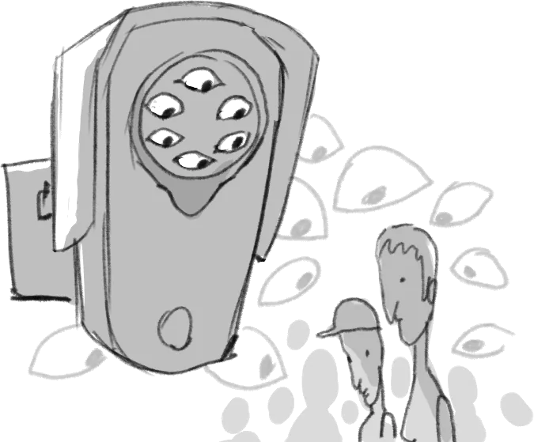
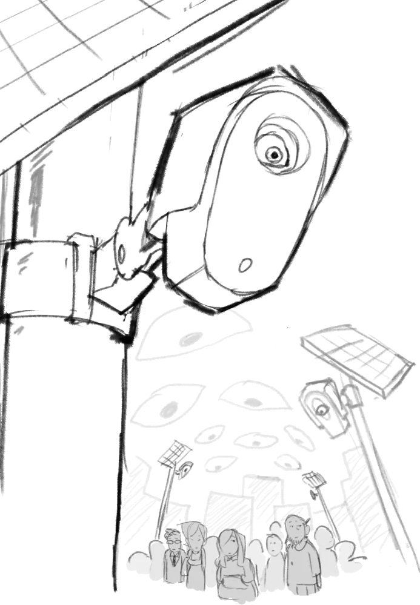
Flock Safety is the most widespread surveillance network in American history. Their ALPR cameras are capturing details of every vehicle that passes in more than 5,000 communities across 49 states. This private for-profit company sells your data to police departments, private business, and HOAs.
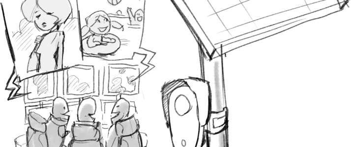
Flock Cameras track your every move! They know your doctor's office, your church, your friends, your politics, & your protests!
1Automated License Plate Readers that use AI power to turn images into text. These cameras capture and analyze images of every vehicle that passes, storing details like your car's location, date, and time.
Driver and passengers too!
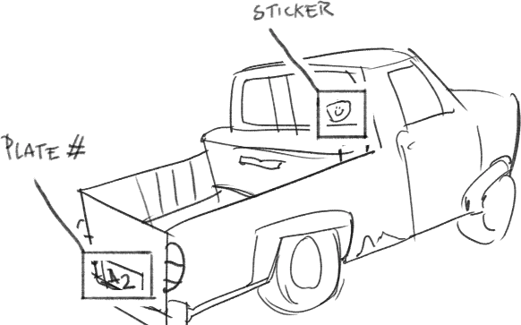
They also capture your car's make, model, color, and identifying features such as dents, roof racks, and bumper stickers, often turning these into searchable data points.
2ALPRs continuously identify, track, and analyze movements across entire cities. They store and connect huge amounts of data over time, generating a detailed pattern of your life.
The right of the people to be secure in their persons, houses, papers, and effects, against unreasonable searches and seizures, shall not be violated, and no Warrants shall issue, but upon probable cause, supported by Oath or affirmation, and particularly describing the place to be searched, and the persons or things to be seized.
3Atlanta is the most surveilled city in the US, 5,000 various Flock cameras now across Atlanta.
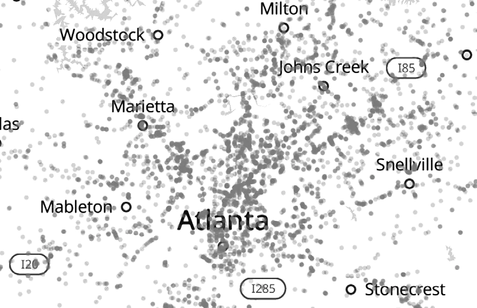
124 Surveillance cameras per 1,000 peopleData released by the FBI shows that the city's mass surveillance has had virtually zero impact on the Atlanta Police Department's ability to solve crime1.
4Not in Atlanta. Overall Crime Clearance Rates have Declined, NOT IMPROVED
Homicide Rates 53.4% to 48% in 2025. According to Atlanta Community Press Collective, FBI data shows homicide clearance rates in Atlanta have dropped1.
APD reported 37 cases of human trafficking from October 2020-Mid 2026. Only 7 of those cases were cleared before May 2024.
The 12 human trafficking incidents reported after 2024 have ZERO CASES SOLVED1.
5Fortunately his influence kept him out of handcuffs!
6Lindsey Isaacs was falsely accused of a hit and run based on Flock data.
Police accused her of a hit and run that killed three people. Florida patrol impounded her car without even looking for damage. Lindsey was facing 8 felony counts, life in prison, spent 13 days in jail, and had to come up with a $250,000 bail.
When investigated it was clear this was the wrong vehicle4.
Flock misread the plate!
You might think "I'm not a criminal, so I have nothing to worry about." Think again!
7ALPRs are ripe for abuse by crooked cops and nearly impossible to escape once they designate you as a target.
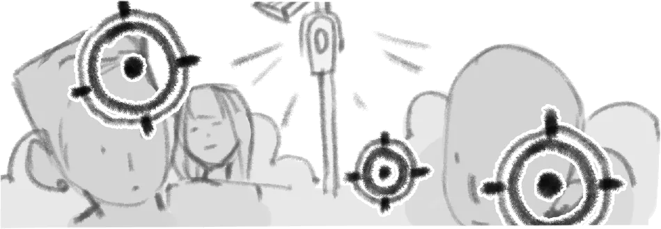
Have You Been Flocked is using the Freedom of Information Act (FOIA) to highlight the dangers of Flock cameras. Their search tool shows Cobb County is working with ICE agents, using it to find diorderly conduct, and tracking protesters.
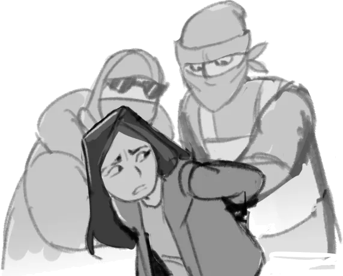
Flock's database can be searched using natural-language descriptions for things like political bumper stickers!
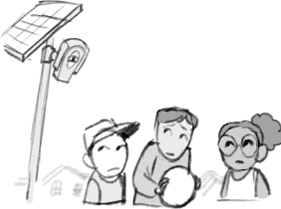
Mass surveillance will be weaponized and abused!
10This is another surveillance company that plans to add sensors to ALPRs that track mobile phones and other Bluetooth devices in your car7.
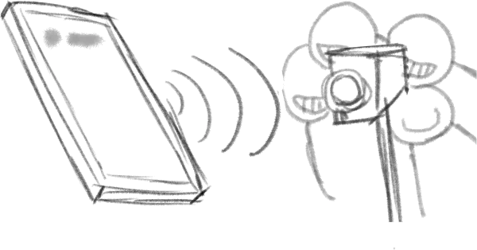
Your Proximity to a Crime makes you a suspect
11Cities and Counties have been canceling their contracts thanks to citizens like you showing up to City Council meetings, writing letters, making phone calls, and protesting.
Democracy doesn't defend itself!
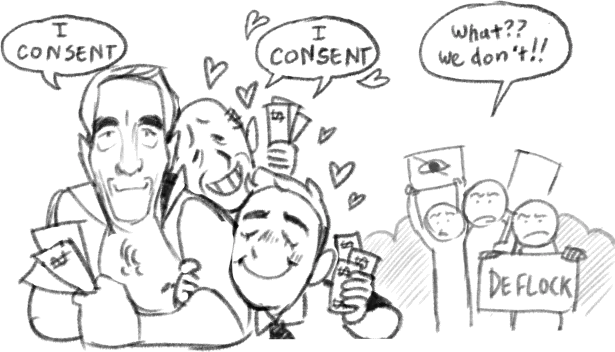
www.deflockcobb.comYou are
here!
THIS ZINE WAS MADE BY HUMANS
14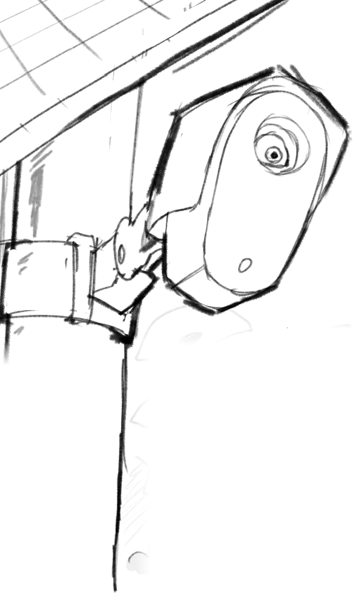